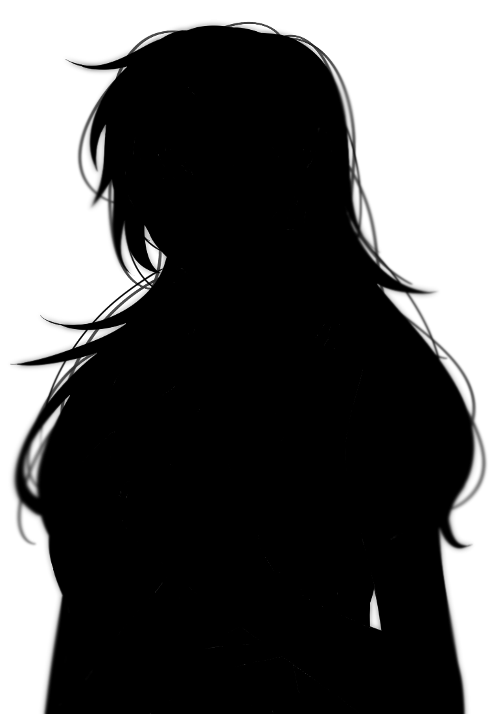
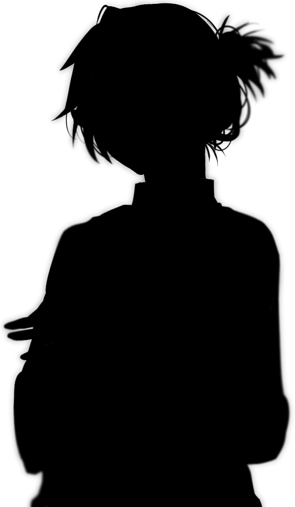
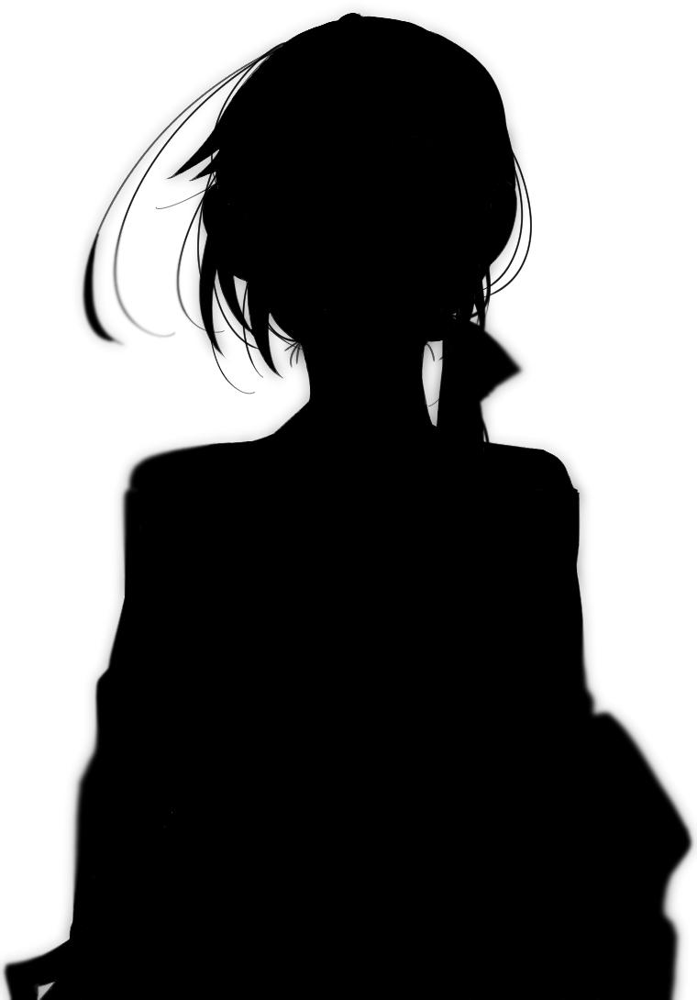
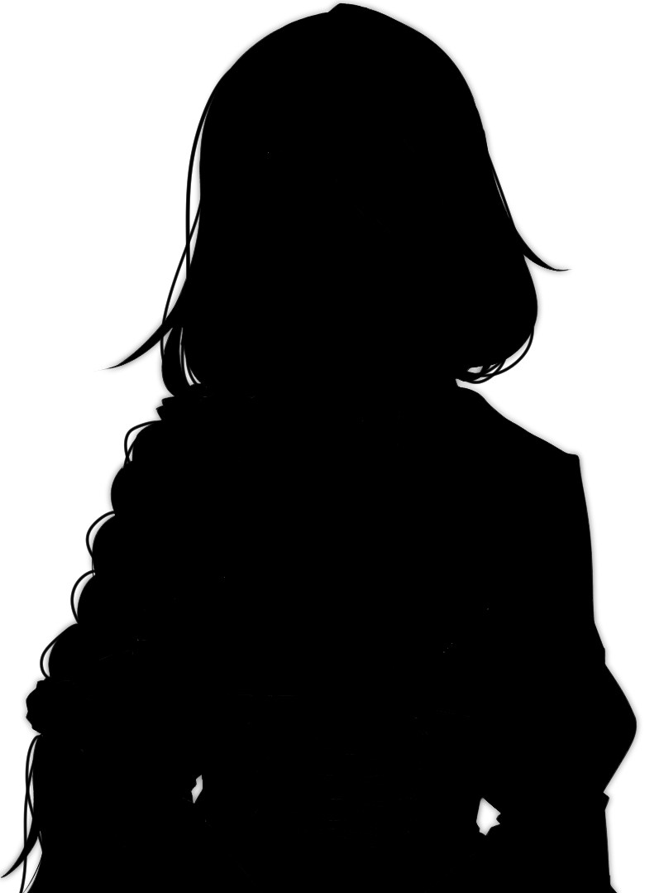
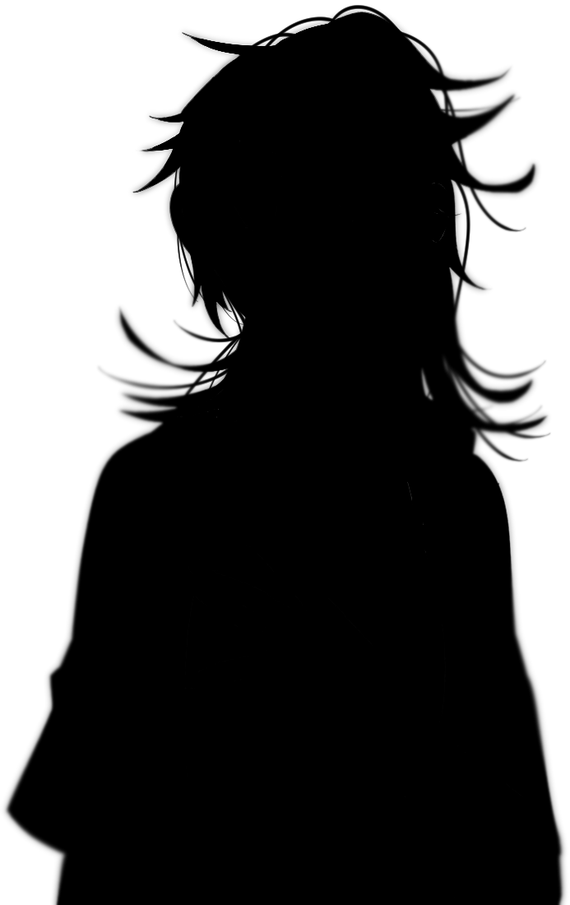

Story
あらすじ
星が見えなくなった世界。夜空を覆う「光の霧」が広がって三年が過ぎた。
天文台の廃墟に住む少女・アオは、ある夜、空の裂け目から降ってきた一人の少年・ルイと出会う。
彼は、消えた星を取り戻すために「霧の向こう側」から来たという。
ふたりは星を探す旅に出る。でも、アオが本当に探していたのは——
三年前に星空の中へ消えた、兄・ソウマの声だった。
劇場アニメーション
― すべての光は、誰かへの言葉だった ―
2026年 夏 全国公開
▼ SCROLL
Trailer
News
本予告映像を公開。主題歌「光の果てへ」（蒼月ハル）のフルサイズ試聴も同時解禁。
キャスト第2弾を発表。ミラ役に桐原夜子、宵役に藍沢律が決定。
AnimeJapan 2026にてスペシャルステージを開催。監督・メインキャスト3名が登壇し、制作秘話を披露。
ティザービジュアル＆特報映像を公開。公開時期「2026年 夏」を正式発表。
劇場アニメーション「星空の彼方へ」制作決定。監督・瀬川燈、脚本・雨宮糸による完全新作オリジナル作品。
Story
星が見えなくなった世界。夜空を覆う「光の霧」が広がって三年が過ぎた。
天文台の廃墟に住む少女・アオは、ある夜、空の裂け目から降ってきた一人の少年・ルイと出会う。
彼は、消えた星を取り戻すために「霧の向こう側」から来たという。
ふたりは星を探す旅に出る。でも、アオが本当に探していたのは——
三年前に星空の中へ消えた、兄・ソウマの声だった。
Characters

碧（アオ）
Ao
天文台の廃墟で一人暮らす16歳の少女。星が見えない世界でも、毎晩空を見上げ続けている。

塁（ルイ）
Rui
霧の向こうから来たという謎の少年。右手には星の地図が刻まれている。過去を語ろうとしない。

蒼磨（ソウマ）
Soma
アオの行方不明の兄。かつて世界一の星観測士と呼ばれた。三年前の「光の霧」事件と深く関わる。

ミラ
Mira
光の霧を研究する科学者。アオたちの旅に同行することになる、ちょっと不思議な大人。
凛（リン）
Rin
アオの幼なじみ。明るくおせっかいな17歳。霧が広がった日も「いつか必ず晴れる」と信じている。

宵（ヨイ）
Yoi
霧の街の地下バーを切り盛りする謎の青年。どんな酒も作れると言われ、夜な夜な訳ありの客が集まる。光の霧が広がる前の星空を知る、数少ない大人のひとり。
Director's Message
監督
瀬川 燈
「星が見えない、ということは、何も感じなくなるということじゃないと思うんです。むしろ、見えないからこそ、あの光がどこかにあると信じ続ける力が生まれる。アオとルイが旅をする中で描きたかったのは、そういう"信じることの重さ"です。
この映画を観終わったあと、夜空を見上げたくなってもらえたら、それだけで十分です。」
Cast
監督 瀬川 燈
脚本 雨宮 糸
キャラクターデザイン 星野 芽衣
音楽 橘 遙
主題歌 「光の果てへ」 / 蒼月 ハル
アニメーション制作 スタジオ・ネビュラ
— 霧の向こうに、まだ星はある —